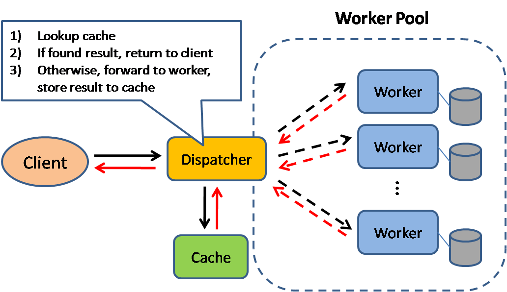
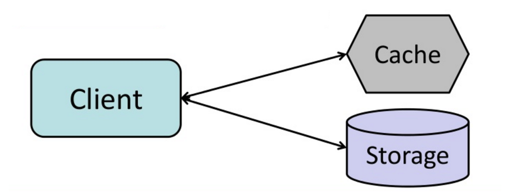
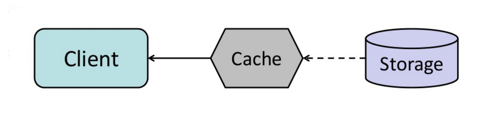

The System Design Primer — Study Path
Where to put a cache, what to put in it, and the four strategies for keeping it in sync with the database underneath.

Caching improves page load times and reduces load on your servers and databases. Before doing the real work, a cache-aware dispatcher first checks whether this exact request has already been answered, and returns that stored answer instead of redoing the work.
Databases usually assume a fairly even spread of reads and writes across their partitions. Popular items skew that distribution and create bottlenecks — a cache in front of the database absorbs that unevenness and smooths out traffic spikes.
Caches can live on the client side (the OS or the browser), on the server side, or in a distinct cache layer of their own.
A CDN (Module 04) is itself a kind of cache.
Reverse proxies (Module 05) and dedicated caches like Varnish can serve static and dynamic content directly. Web servers can also cache requests themselves, answering without ever contacting an application server.
Your database usually ships with some caching already configured for a generic use case — tuning those settings for your actual access pattern can meaningfully boost performance.
In-memory caches such as Memcached and Redis sit between your application and your data storage as key-value stores. Because the data lives in RAM, they're far faster than a disk-backed database. RAM is scarcer than disk, so invalidation algorithms like least recently used (LRU) evict "cold" entries to make room for "hot" ones.
Redis adds a few things on top: an optional persistence mode, and built-in data structures like sorted sets and lists.
There are several levels you can cache at, falling into two broad categories — database queries and objects:
Generally, avoid file-based caching — it makes cloning and auto-scaling servers much harder.
Hash the query itself as a key, and store its result in the cache. This runs into expiration trouble: complex queries are hard to invalidate precisely, and if a single table cell changes, you must invalidate every cached query that might have touched it.
Treat your data the way your application code already does: as objects. Have the application assemble a class instance (or other data structure) from the database, then:
Good candidates to cache this way: user sessions, fully-rendered web pages, activity streams, user graph data.
Since cache space is limited, you need a deliberate strategy for keeping it in sync with the source of truth.

The application talks to both the cache and the storage directly — the cache never talks to storage on its own. On a cache miss, the application loads the entry from the database, adds it to the cache, and returns it:
def get_user(self, user_id):
user = cache.get("user.{0}", user_id)
if user is None:
user = db.query("SELECT * FROM users WHERE user_id = {0}", user_id)
if user is not None:
key = "user.{0}".format(user_id)
cache.set(key, json.dumps(user))
return user
Memcached is generally used this way. Subsequent reads of the same data are fast, since this is also called lazy loading — only data that's actually requested ever gets cached, so you never fill the cache with things nobody asked for.
The application treats the cache as its main data store — the cache itself is now responsible for reading and writing to the database behind it:
Application code:
set_user(12345, {"foo":"bar"})
Cache code:
def set_user(user_id, values):
user = db.query("UPDATE Users WHERE id = {0}", user_id, values)
cache.set(user_id, user)
Write-through is slower overall because of the extra write step, but any data just written reads back fast — and people tolerate latency on writes far better than on reads. The cache is never stale.
The application adds or updates an entry in the cache, then the entry is written to the data store asynchronously — improving write performance at a cost.

Configure the cache to automatically refresh any recently-accessed entry just before it expires. Done well, this beats read-through on latency — but only if the cache can actually predict what's likely to be needed next.